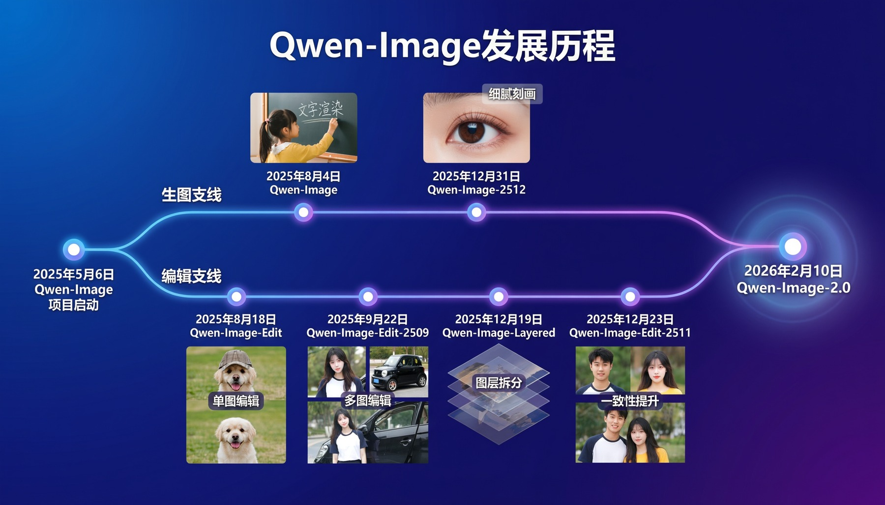
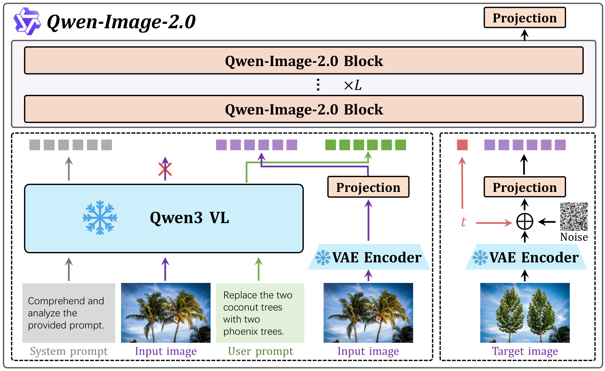

一个统一的图像生成基础模型，用 Qwen3-VL 做条件编码器 + 高压缩 VAE + 多模态扩散 Transformer（MMDiT），让高保真生成和精确编辑共用同一套架构与训练范式——不再切换 pipeline。
阅读原文：arXiv:2605.10730 摘要页 · PDF · 官方博客
当前的图像生成模型大多「偏科」：要么擅长写实出图，要么擅长文字渲染；要么会文生图，要么会图像编辑——很难在同一个模型里同时做好，往往要靠多条 pipeline 拼接，且会牺牲质量。Qwen-Image-2.0 的目标就是用一个统一架构同时拿下生成与编辑，并且在「超长文字渲染、多语言排版、2K 写实、复杂指令遵循、推理效率」这些真实创作痛点上都往前推一步。
来源：官方博客首图（Qwen Team 用 Qwen-Image-2.0 生成）。
图像生成这两年进步很快：从早期的潜空间扩散（latent diffusion）到扩散 Transformer（DiT），再到用视觉语言大模型当条件编码器，文字渲染和指令编辑都越来越能用。但真正落到创作流程里，仍有几个反复出现的瓶颈：
更根本的难题是统一：现有系统通常只在某一条轴上强——要么写实、要么文字；要么生成、要么编辑——很少能在一个高效架构里同时做好。Qwen-Image-2.0 正是冲着这个「合二为一」去的。

来源：官方博客（该幻灯片由 Qwen-Image-2.0 按一段长提示词直接生成）。
Qwen-Image-2.0 由三个紧耦合的核心部件组成，协同完成可控、高保真、又高效的生成与编辑：
关键在于：文本 token 与图像 token 被拼成一条统一序列，喂进同一个 Transformer 主干联合建模。这套结构天然支持「无输入图（文生图）」和「有输入图 / 多图（编辑）」两种模式，无需切换 pipeline。下面是论文给出的真实架构图。

一句话总结：左边喂「条件」（文字 + 参考图），右边喂「带噪的目标」，中间 MMDiT 在 latent 空间联合去噪——T2I 时没有输入图、TI2I 时带上输入图，同一结构两种用法。
架构图信息密度高，下面用「下一步」把一次生成/编辑的数据流走一遍——看清条件 token 与目标 token 是怎么汇成一条序列、再被一步步去噪还原的。
用户给出系统提示 + 文本提示，编辑任务再加上一张或多张输入图。
说明：这是对「文生图 / 图像编辑」共用数据流的教学化拆解；T2I 任务没有输入图，TI2I 任务带上输入图（或多图），其余流程一致。
架构层面的功夫，主要花在三处：让 VAE「压得狠又重建准」、让 MMDiT「文图联合训练时稳」、再加一个把用户口语提示「写细」的 Prompt Enhancer。
高压缩 VAE 是原生高分辨率生成的关键——把图像投到更小的 latent，能大幅降低扩散训练成本。开源 VAE 多用 8× 压缩，本文用更激进的 16×来进一步加速 DiT 训练。
但高压缩绕不开一个三难权衡：压缩比、重建保真、可扩散性（latent 是否好被扩散建模）三者互相拉扯——压得太狠丢信息、为保信息加通道又会让 latent 难以扩散。
论文的解法：残差自编码架构（非参数化的 shortcut 连接，更好保留细粒度空间细节）+ 把 latent 通道增到 64（f16c64 与标准 f8c16 同样的「总通道瓶颈」，但压缩比更高）；再引入语义对齐损失（参考 VA-VAE）提升可扩散性。两个关键观察：① 早期施加强语义对齐至关重要、后期再逐步放松，能兼顾重建与扩散；② 大规模 VAE 训练里对抗损失基本冗余，干脆去掉以提升稳定性。还专门用文档/PPT/海报等文字密集语料训练，强化小字与密集文本的重建。
对比项里很多 8× VAE 才能达到的重建质量，本文在 16× 压缩、且编码/解码参数更小（79M / 259M）的情况下追平甚至超过（原文 Table 1）。
给定视觉输入 x 与文本输入 y，Qwen3-VL 先各自编码成表征；其中视觉表征被替换为 VAE 抽取的 latent，再与文本表征拼接成统一序列喂入 Qwen-Image-2.0 Block。几处稳定训练的关键设计：
复杂创作（信息图、海报、分镜、数据可视化）很吃提示词对版面、关系、视觉层级的描述，但真实用户的提示往往很简略。Prompt Enhancer（PE）就是一个改写模块，把粗糙 query 改写成结构化、细节丰富的提示。
数据怎么造（反向工程）：拿一段精细标注 Pfine，先用 LLM 归类（General / Portrait / Text / Complex Text），再按策略池随机「降级」成口语化、信息缺失的短提示 Pshort。由于每步降级都在删信息，其逆过程天然构成一条提示增强的思维链（CoT），得到三元组 (Pshort, CoT, Pfine) 作训练监督。编辑任务因输入图已有丰富上下文，改用 MLLM 把长标注概括成简洁编辑指令，不做随机降级。
怎么训：PE 初始化自 Qwen3.5-9B，先 SFT（学会稳定改写）、再 GRPO 的 RL（用「MLLM 视觉一致性 + MLLM 美学 + 规则文本约束」的奖励，把改写后的提示和下游成图质量对齐）。
用户只说「帮我生成一个手绘风格的杭州两日禅意人文之旅双语海报」，PE 借助世界知识，自动扩写出含版式、配色、行程节点、中英对照的长提示——而这种复杂描述，恰是 Qwen-Image-2.0 最擅长渲染的。 — 官方博客示例（已节选意译）
模型能力很大程度由数据决定。Qwen-Image-2.0 的数据基建分三块：怎么描述（标注）、怎么筛和喂（多阶段管线）、怎么持续变强（数据飞轮）。
面向任意分辨率/复杂度的通用图，覆盖主体、场景、空间关系，乃至画面里的文字及其语义；支持多语言、变长描述。
面向文字/符号密集的素材（PPT、漫画、海报、教材），重点准确抽取密集文本、版面结构、视觉符号及其语义关系。
以「条件」形式注入图像相关的背景知识/上下文线索，让模型把图像语义与世界知识联系起来。
面向关系图、流程图、示意图等元素多、关系复杂的图，显式建模实体-属性-关系，学层级与拓扑依赖。
训练数据经过六个顺序阶段逐步精炼：分辨率从 256P 一路爬到 2048P，数据类型从纯文生图逐步加入编辑数据、合成数据与高分辨率精选，过滤阈值越来越严。
为了持续迭代，论文设计了一套高度自动化的数据飞轮：收集失败信号 → 按「错误归因」分流到不同优化轨道 → 更新模型 → 再回到评估，形成自我强化的闭环。人工只在「必要的数据复核与过滤」处介入。
对应原文 Figure 7（误差归因驱动的闭环数据飞轮）。本图按原文结构重绘，配色统一为本页暖色系。
训练分三段渐进推进，分辨率、过滤标准、数据配比都随阶段调整，让模型从「学基本语义」过渡到「抠细粒度细节」。
低分辨率（256/512）提升吞吐，学通用视觉表征；T2I:TI2I = 9:1；学习率 1×10⁻⁴。
分辨率升到 512–2048 抠细节；配比调到 7:3 强化编辑；学习率降到 2×10⁻⁵。
聚焦美学质量，严格过滤 + 人工精选；学习率再降到 1×10⁻⁵，保住世界知识。
优化器均为 Adam，weight decay 0.001，梯度裁剪 1.0，无条件 dropout 0.1（原文 Table 2）。分辨率课程从低到高逐步放大，既稳优化又提升高分辨率连贯性。
为对齐人类偏好，论文用多维奖励 + 样本高效的优化算法精修扩散模型。奖励按任务拆成五个：
构图平衡、真实光照、纹理保真、整体艺术协调。
图与提示的语义一致，惩罚遗漏/曲解/违背用户要求。
人体结构合理、面部比例与身份细节、皮肤毛发质感。
编辑操作是否被准确执行（替换、风格迁移等）。
保护未编辑区域的身份与结构，几何/拓扑/语义一致。
所有奖励校准到可比尺度，权重在训练中动态调整，避免对单一维度过优化。优化用改造过的 GRPO 扩散 RL 框架，并采用一个混合 CFG 策略：rollout 采样时用 CFG 生成高质量候选（让奖励更可靠），但策略优化目标里剔除无条件分支，从而省去优化无条件模型的开销。最终得到 Qwen-Image-2.0-RL。
为提升效率，论文用分布匹配蒸馏（DMD）把多步教师蒸成少步学生——以 Qwen-Image-2.0-Base 为 40 步教师，蒸出仅 4 NFE 的 Qwen-Image-2.0-Distillation 学生。DMD 用一个「假分数模型」估计学生分布的条件分数，对齐教师的真实分数，沿采样轨迹压缩步数。
原文 Figure 11 显示 4-NFE 学生与 40 步教师在多类提示下质量相当，但推理成本大幅下降。
在以真实用户偏好为基础的 LMArena（2026-04-22 访问）盲测上，Qwen-Image-2.0 表现强劲：
大量人类评测显示，相比此前 Qwen-Image 系列，2.0 在生成与编辑两侧的整体视觉质量、编辑能力与实用性上都有明显进步。下面用一个编辑样例感受一下「编辑 + 复杂中文渲染 + 身份保持」三件事如何同时成立。
来源：官方博客图像编辑示例（对应论文 §5.3 复杂中文渲染与身份保持，Figure 16–17 同主题）。
作者把模型在文字渲染上的特点概括为「准、多、美、真、齐」——准确无错字、支持超长内容、排版美观、与写实画面自然融合、表格/日历类对齐工整。下面收起几段「夸张到离谱」的长提示词样例，想感受指令复杂度可以展开看。
下面这段提示词描述了一张三栏信息图（测试概览 / 统计分析 / 业务影响），含收入提升、ROI、显著性检验、对照组 vs 实验组数据表等——模型需要把这些密集文本与图表元素都准确渲染并排好版。
这段英文提示词要求在一张「长城金色时刻的办公室玻璃白板」照片里，渲染玻璃上的手写要点、T 恤 logo、杂志封面等多种介质上的文字，同时保证写实光学质感。
注：图中出现的具体参数文字属于「提示词内容/生成画面」，非官方架构参数；架构事实以论文正文与上方架构图为准。